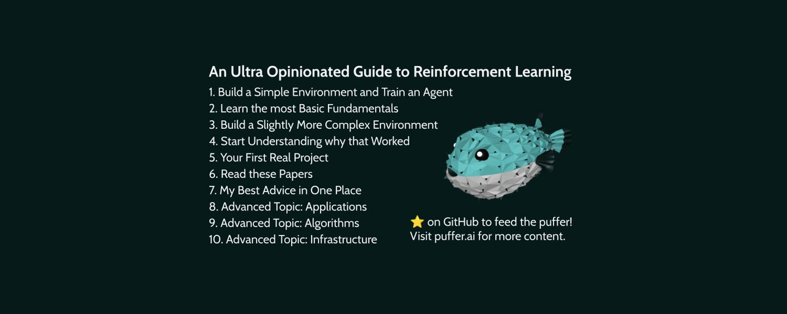

An Ultra Opinionated Guide to Reinforcement Learning

Reinforcement learning is about learning through interaction. Applications include robotics, logistics, gaming, and even control problems in science like nuclear fusion. It's an underexplored niche of AI where you can really advance the field without a ton of compute. But learning RL is hard, and most of the material out there for beginners makes it even harder. The advice here is a formalized version of how I train new PufferLib contributors. Some of these came in with zero programming knowledge and now help advance our research and tools. The key is to start doing reinforcement learning immediately while filling in knowledge gaps slowly through experience. In other words, reinforcement learning. First, the content here is a radical departure from all other RL books, tutorials, and references. This field is broken. Let me say that again: this field is broken. Mainstream deep learning has high-quality resources, generally sane approaches to most common problems, and a pipeline to start quickly doing useful work. The standard advice for newcomers in RL may as well just be designed to screw with you. You will understand why by the end of this.
Second, this guide has assumes that you are a competent programmer, have at least seen C or C++ in a systems course somewhere, and have basic deep learning knowledge at the level of Stanford's CS231n. My definition of "competent" includes many undergrads and excludes many well-paid ML engineers. As a quick litmus test: can you implement the forward pass of an LSTM without importing anything? If not or if the implementation you just thought of would be >100 lines, start with the prequel article "My Advice for Programming and ML." And finally, since I'm writing this for a broader audience: hi, I'm Joseph. After finishing my PhD at MIT, I've started a quest to make RL fast and sane. Most of my content focuses on the cutting edge of RL, but this has become surprisingly accessible lately. If you haven't heard of it already, PufferLib is my main project. It's a reinforcement learning library that is both simpler and 1000x faster than other libraries like SB3, RLlib, etc. We're always looking for new contributors, so follow me here and join discord.gg/puffer to get involved. The best way to support my work for free in <5 seconds is to star pufferlib on GitHub and RT this article.
1. Build a Simple Environment and Train an Agent
Read the introduction to my RL Quickstart Guide. Just the first paragraph. You now know some words we use in RL and not much else.
Read the PufferLib docs on writing your own environment. Including all the linked code on the squared sample environment. Map the terms from the introduction to this code. Observations, actions, rewards, and terminals are just arrays. The observations are inputs to the agent's neural network, which outputs actions. Rewards determine whether the agent has reached its goal, at which point the terminal value is set to true. You don't know how we use all these things to actually train yet and that is fine.
Write your own environment. Keep it so simple as to not even be useful. That will come next. If you can't think of anything, do a stripped down version of flappy bird on a 2-block tall grid. The agent can move either up or down. It observes whether there is a wall on the roof or floor. -1 reward for hitting the ceiling, 0 otherwise. Bind it to PufferLib following the docs and train your first agent. Ask in the Discord if you get stuck.
2. Learn the most Basic Fundamentals
Read Karpathy's policy gradient blog. Including the implementation. There are a few very minor details that are dated, but it is otherwise still the best basic introduction to on-policy methods. You should now understand how policy gradients turns observations, actions, and rewards into derivatives over weights. You have also seen discounted reward as your first example of an advantage function. Understand that the discount factor mathematically determines how much you care about reward now vs. reward later.
Read the Fundamentals section of my RL quickstart guide. This will give you context for the basic classes of methods. Don't go down a rabbit hole of reading papers just yet. All modern algorithms are at least slightly off-policy, and the strict distinction does not matter as much anymore. Read the multi-agent bullet point twice.
Read and train Puffer Target. This environment is included in the same tutorial you already followed. It is multi-agent and significantly more complex than squared. The agents no longer move on the grid and have to solve a more temporally extended problem. Every agent sees a normalized distance measure from itself to every other agent and goal. Agents only receive a sparse reward of 1 for reaching their goal. Follow the docs to train an agent on this environment. It should only take a few seconds.
3. Build a Slightly More Complex Environment
Make something about as complex as Target. Max ~300 lines. It doesn't have to be multi-agent. If you did grid-based flappybird before, do the full game. Any similarly scoped project should suffice. Think about what data the agent needs to see in order to play and make sure that is included in the observations. Reread the debugging section of the custom environment docs to avoid common errors and post in our Discord if you get stuck. Aim to train an agent that you can visually confirm is playing the game well.
Read other puffer environments. Snake and Convert are two slightly more complex environments with clean code. You can also start looking at some of the arcade games like pong and breakout. By now, you've probably hit a few bugs and can start to appreciate the ways in which things can go wrong. We mitigate that by keeping code simple and minimally abstracted. The biggest mistake you can make in RL is to underestimate the price of complexity.
Enhance your Environment. Add some features that make the problem a little more interesting. Retrain with different versions and see how your changes alter the agent's learning. Aim for something on the level of pong or snake. If you get something visually interesting and not already in PufferLib, come show us and PR it! Many simple environments end up being quite useful in research.
4. Start Understanding why that Worked
Read the core algorithm paper. It is dense, but the actual algorithm is simple. Read the bullet point on PPO from my quickstart guide first for some intuition. Then read the Proximal Policy Optimization (PPO) paper. You can ignore the TRPO and KL-penalty sections. The main equation 7 is just saying: clip the policy gradient and weight it by the advantage function, then average over a batch of data. The advantage function is Generalized Advantage Estimation (GAE). If you have a strong math background, read this now. Otherwise, put it off until section 6.
Understand why I didn't have you implement the algorithm. The common reference algorithms are extremely fiddly. Read Costa's 37 Implementation Details of PPO and the associated CleanRL PPO implementation. It's not particularly long, but the details really matter.
Read our other articles. They are simpler than academic papers and tell you exactly how the tools you have been using work.
5. Your First Real Project
Finish reading my quickstart guide. You will not have context for all of it just yet, but it contains a lot of useful perspective as you start to solve harder problems. For example, depending on how hard your environment is, you may actually have to run a hyperparameter sweep to get a good policy. If you implemented something like a card game, you may at least need to decrease the discount rate. Do you understand why?
Read the Pokemon Red RL Blog. This is a Powered by Puffer (tm) (c) (r) project that beats the entire game using pure from-scratch reinforcement learning. The observation space formulation, reward engineering, and problem setup are all informative. Note that Pokemon Red is ~1000x slower than most of our RL environments. You will almost never need to actually do this level of engineering when you have faster simulators.
Pick an interesting problem. Aim for something you can do in 500-1000 lines, depending on your programming background. Several useful environments have been shorter than that. Arcade games are usually a good choice. Just check in the Discord that nobody is already doing the same one. If you have experience in another field, applied problems are even better. Good RL environments look like fiddly interactive optimization problems that are quick to simulate and have clearly defined observations and actions. The initial drone environment was only a few hundred lines.
Solve and PR to PufferLib. It may seem self-serving, but this is genuinely the best way to learn. We have an active community of researchers and hobbyists large enough that someone will nearly always be around to answer your questions. Many environments that you wouldn't expect to be useful actually help us advance core RL research.
6. Read these Papers
The list of important papers to read in reinforcement learning is quite short. See my programming and ML advice article and my quickstart guide for perspective on why this is the case. These are the top 10 papers you should read, regardless of what you want to do next. This list is intentionally not a historical account of mostly broken algorithms. My focus is on the major capabilities-defining results and the commonalities among them. Note that almost all of the OpenAI/DeepMind results have associated blog posts that are more accessible than the formal manuscripts. You can start there, but you also read the full papers if you want to do research. We have a couple papers on PufferLib and Neural MMO that you can read if you want, but you're better off just reading our blogs, docs, and the source code.
- Dota 2 with Large Scale Deep Reinforcement Learning: My pick for the most important paper in the field. PPO with a single-layer LSTM solves DoTA. I have seen many top researchers undervalue this result and waste their time developing fancy methods to solve trivial problems. Go play the game if you need convincing that the problem is meaningfully hard. Do not skip the appendix.
- Grandmaster level in StarCraft II using multi-agent reinforcement learning: Another extremely hard problem solved with RL. It's #2 because DeepMind bootstrapped with imitation learning and used significantly more complicated methods. They tend to do this often, and I am not convinced it is required.
- Mastering the game of Go with deep neural networks and tree search: This is a landmark historical result that kickstarted the field. You could arguably place it higher. Reasoning about the comparative complexity of Go is hard. The naive branching factor argument breaks when you look at games like DoTA or SC2.
- Learning Dexterous In-Hand Manipulation: Learning to manipulate a Rubik's cube with a robot hand using reinforcement learning. This project pioneered domain randomization (training on a ton of slightly different problems) to improve generalization and robustness.
- Open-Ended Learning Leads to Generally Capable Agents: Also known as XLand. Randomization over training tasks allows agents to generalize to new tasks not seen during training. There are a bunch of conflating variables here with method changes, but the end result is a pretty compelling argument that RL can generalize.
- Emergent Tool Use From Multi-Agent Autocurricula: 3v3 hide and seek with movable obstacles. A purer version of the techniques used in DoTA applied to a simpler but still complex task.
- Human-level performance in first-person multiplayer games with population-based deep reinforcement learning: 3v3 capture the flag with FPS mechanics based on the associated Quake game mode.
- The NetHack Learning Environment: A really hard environment for reinforcement learning. You probably can't solve it with a general method without also solving AI in the process. I call that AI-complete.
- Proximal Policy Optimization: The core algorithm that is the basis of most modern RL. We built our PufferLib 3.0 algorithm as a set of enhancements to PPO.
- High-Dimensional Continuous Control Using Generalized Advantage Estimation: The advantage function that is half the reason PPO works. One of our 3.0 enhancements was to combine GAE with VTrace.
- Playing Atari with Deep Reinforcement Learning: The original deep Q learning paper that spawned the field of modern RL.
7. My Best Advice in One Place
How to approach a new problem: Start from first principles. The agent is learning tabula rasa - it's a blank slate. At the start of training, it's looking for signal by mashing buttons. It also can't see. Imagine the environment has the graphics completely randomized. Some reward has to be obtainable this way. To actually learn from this reward, the agent needs to be able to see. What information does the agent need to solve the problem? Make that the observation space. Ditto for actions. What information would tell you if your agent is working correctly? Log that. You almost always want a single real number metric of overall performance. Don't only log raw reward, because you will probably tune the scale of this number and make results incomparable. Log a score instead. For example, we might give the agent a reward of 0.25 or 0.5 for breaking a brick, but we log the actual number of points obtained. Bonus points if you can scale it to the range of 0 to 1. Log any extra data you will actually look at, but don't log a ton of stuff you won't use. Good candidates include collision rates, out of bounds, etc. since these are sanities that should drop to near 0 for applicable problems. Write the simplest possible environment that is still fast. Don't abstract anything. That's important enough to say twice: don't abstract anything. Start training early and frequently. You want iteration speed to be as fast as possible. Seconds is better than minutes. You've lost if it is hours. If training does not work, suspect your data. Make your environment playable. Is what you see happening sensible? Do you see reward being assigned when you expect it to be? Run an evaluation on a checkpoint. See if the agents have found some degenerate unrecoverable state. For harder problems, scale up slowly and don't make a ton of changes without training a decent model on the latest version. Don't experiment with new algorithms on new environments that are constantly changing. Do your research on stable problems, then try it on the new environment.
How to encode data: Normalize the observations appropriately. You want position data to be egocentric when possible. You can do this by subtracting the agent's position and dividing by the maximum value. Discrete data can't just go into model without encoding. If you represent knight, king, queen, pawn, rook as 0, 1, 2, 3, 4, inputting that into a model raw implies knight is more similar to king than it is to rook. It also forces the model to learn a wonky decision boundary in latent space. One-hot encode knight as [1, 0, 0, 0, 0] instead. You can do this in the environment for very small values, but do it in the policy for larger values to save bandwidth. Actions should be the simplest possible set of controls for your environment. I like to imagine the environment being released for gameboy and designing the controls to match. Neural MMO 3 features exploration, combat, equipment, consumables, progression, and a live market. The action space is a single discrete, and the game is playable with keyboard only. Don't blow up the size of the space to accomplish this though.
8. Advanced Topic: Applications
Do you have deep knowledge of another field? Use it to look for problems where RL can help. These all tend to have the same feel. RL works when you have a fiddly interactive optimization problem and can build a fast sim. To give you some ideas, we are currently doing open-source work on drones and logistics. Both are areas where we can easily build simulators that run millions of steps per second in a few hundred lines of basic C.
Longer term, we're most interested in applying RL to hard science and manufacturing. Are there areas of molecular simulation where we can cut corners on fidelity? Are there constrained areas of robotics where the current simulators are massive overkill? What about in the production of goods - there are likely problems where nobody has even thought of building a sim! As a quick plug, if you want to join us on the business side, this is the best way. If you build a prototype and we find a client, we'll bring you aboard for the contract.
Here are a few successful applications:
- Magnetic control of tokamak plasmas through deep reinforcement learning: Nuclear fusion
- A Better Match for Drivers and Riders: Reinforcement Learning at Lyft: Rideshare logistics
- Controlling Commercial Cooling Systems Using Reinforcement Learning: Datacenter cooling
- Robust Autonomy Emerges from Self-Play: Self-driving
- Chip Placement with Deep Reinforcement Learning: Chip design
9. Advanced Topic: Algorithms
You need a good enough math background (i.e. CS231n) to be able to understand publications in this area and a good enough programming background to run your own experiments. Expect to read a larger number of papers critically. More published results are wrong in RL than in other areas of AI. Even the ones with strong evidence. Here are a variety of research areas with important open questions and some of the relevant papers.
Off-policy learning: During the peak ~2019 golden era of RL, OpenAI mostly used on-policy methods while DeepMind used off-policy ones. DoTA and emergent tool use are clear-cut confirmations of on-policy methods working in relatively clean settings. We don't have the same thing for off-policy methods because the main DeepMind results tend to have more moving parts. On-policy methods work great and are fast with unlimited data. Off-policy methods are sometimes favored in data-poor settings. Can we get the best of both? Here are some papers we're looking at.
- Rainbow: Combining Improvements in Deep Reinforcement Learning: The first usable off-policy method to compete with PPO. It's a kitchen-sink disaster of tricks bolted on to DQN.
- Beyond The Rainbow: High Performance Deep Reinforcement Learning on a Desktop PC: This paper hasn't gotten any attention yet, but it is a good followup to Rainbow that balances sample efficiency for relatively slow sims with decent wall-clock training time.
- Human-level Atari 200x faster: It's only 200 times faster if you're counting environment steps and treating compute as free. The result still holds though, so there's probably something here.
- IMPALA: Scalable Distributed Deep-RL with Importance Weighted Actor-Learner Architectures: Introduces VTrace to correct off-policy drift. We tried this in PufferLib 3.0 and it was just worse than GAE. It did help a little overall when combined with GAE.
Model-based Learning: Can you compress transitions by predicting the next state? Various methods attempt to do this and then learn within hallucinated data generated by the model. Others just attempt to use the model as an auxiliary loss. The science in this area is iffy, and I don't trust the reasoning behind any of the published results. There is very likely something here though. Possibly as an alternative to off-policy resampling.
- Recurrent World Models Facilitate Policy Evolution: Original world models paper
- Mastering Diverse Domains through World Models: Probably the best known paper in this space, DreamerV3. This somehow scales to 200m parameters, which usually doesn't work in RL.
- Reward Scale Robustness for Proximal Policy Optimization via DreamerV3 Tricks: Our publication showing that the tricks introduced in DreamerV3 don't work according to the reasoning given.
Search: Can you explore or simulate chains of different possible outcomes to improve learning and/or test-time performance by leveraging more compute? It has worked in several DeepMind projects with and without access to simulator dynamics, but it has not been applied as broadly as vanilla PPO etc.
- Mastering Atari, Go, Chess and Shogi by Planning with a Learned Model: MuZero removes the requirement from AlphaGo that you need to be able to set the simulator state.
- Go-Explore: a New Approach for Hard-Exploration Problems: Uses settable sim to gimmick very hard exploration problems unreasonably well. To be fair, if settable state is useful, we can build it in to almost every type of sim.
- EfficientZero V2: Mastering Discrete and Continuous Control with Limited Data: Built on MuZero, claims to beat DreamerV3
10. Advanced Topic: Infrastructure
I am writing this in the context of PufferLib's infrastructure since we unambiguously lead here. Our models train at 3-5 million steps/second in PyTorch eager mode. Napkin math says that we should be able to double this performance on our larger models and 10x it on smaller models. Everything has to get faster to keep up.
Environment speed: Read our env_binding.h file. It is responsible for defining those magic vec_reset and vec_step methods. Except that there is no magic. We're just creating N copies of your environment and running them in a loop. The magic logging method is just iterating through the fields of your Log struct and dividing by log->n. We have this set up for you because Python<->C data transfer is tedious and error prone, and the boilerplate is roughly the same for every environment. It is set up so that it is fairly easy to get access to individual environments from Python if you need it as well. We would like to build in settable simulation state, but we have not thought about it too much. The point is, this is pretty much the lowest overhead thing we can do. Data does not have to be copied between C and Python during step. Both have access to the same data pointers. The next step in optimization here would be figuring out general approaches to improve caching and SIMD.
Parallelization: We have a Python implementation of EnvPool. As of 3.0, it is round-robin N-way buffered by default. All buffers are allocated in shared memory. Each environment is given a pointer to a block of memory. The C process writes directly to this memory, making the entire batch available to the main thread immediately without extra copies. This is already almost as fast as it could possibly be. It may be possible to buffer the actual CPU to GPU data transfer, because this is a big chunk of overhead on fast environments with large observations.
Models and Training: This is where the biggest opportunity is. There are a few common operations like entity embedding where we don't have custom kernels. Stuff needs to be more fused in general, and we haven't gotten much out of torch compile or low-precision. To be fair, we haven't even tried to tune bf16 on A100s/H100s, and bf16 is nerfed on consumer cards. We should be computing Model Flops Utilization (MFU) and seeing how close we are getting to the limits of the card, but we aren't. Right now, PufferLib's performance depends strongly on using thousands of parallel environments and large minibatch sizes. We'd like to have less performance degradation with fewer environments and smaller minibatches.
Bonus: Work with Puffer
I said this would be an opinionated guide. PufferAI is a comprehensive effort to fix everything wrong with reinforcement learning. If I thought there was a better overall approach, I would be doing that instead. PufferLib is a free and open source, and at this point, most of the code is written by contributors. We absolutely need more help on the core. It's only a few thousand lines, but this is where the most experience is required. This is where we're making the key enabling breakthroughs, and contributing is the best way to understand the cutting edge of reinforcement learning. Join discord.gg/puffer to get involved! If you have found this guide useful, please take a moment to star pufferlib on GitHub to support our work for free.